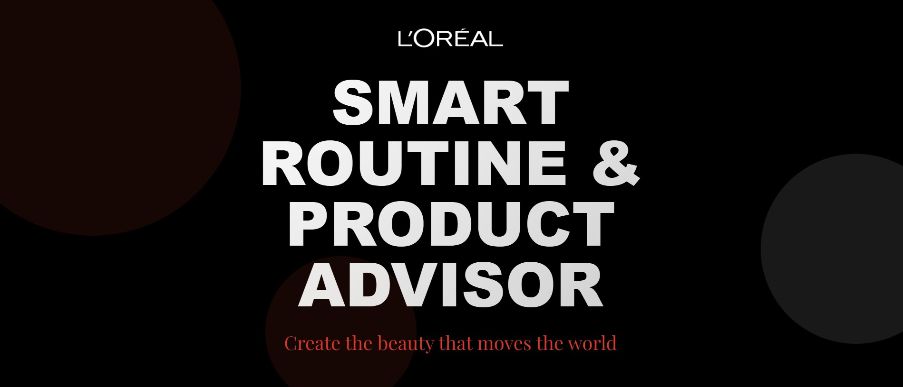
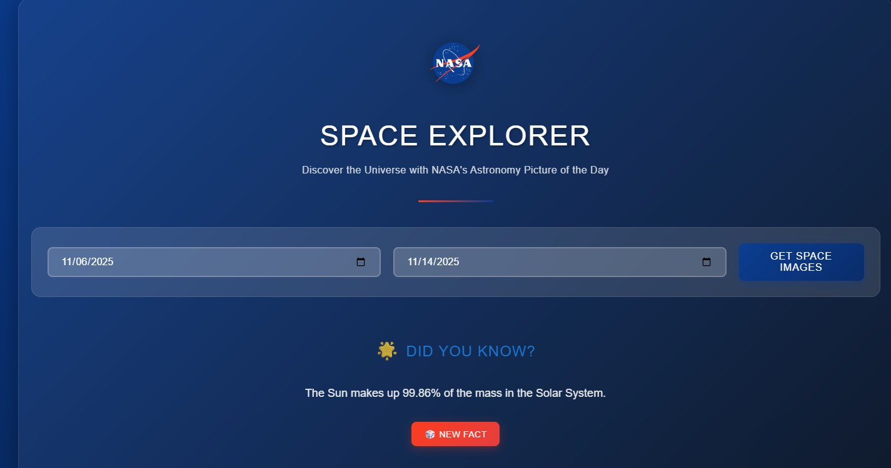
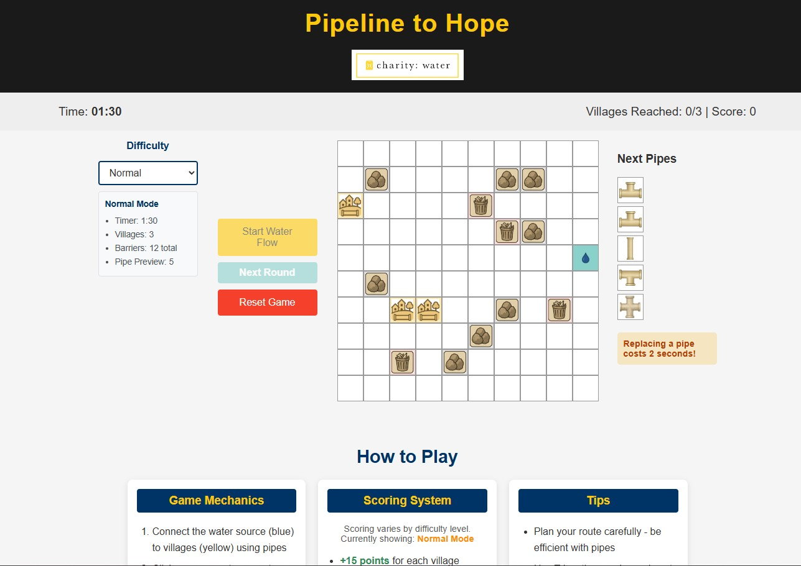
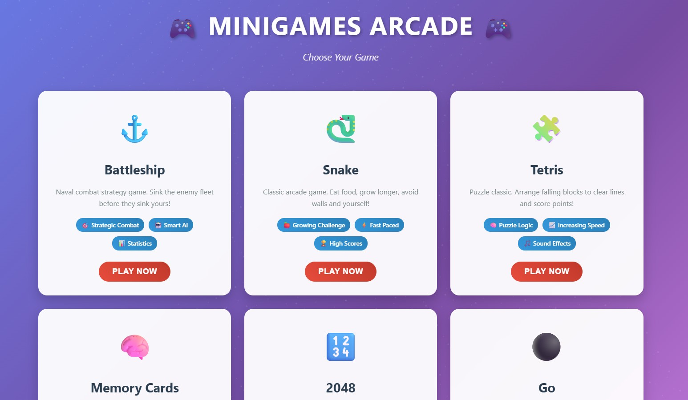
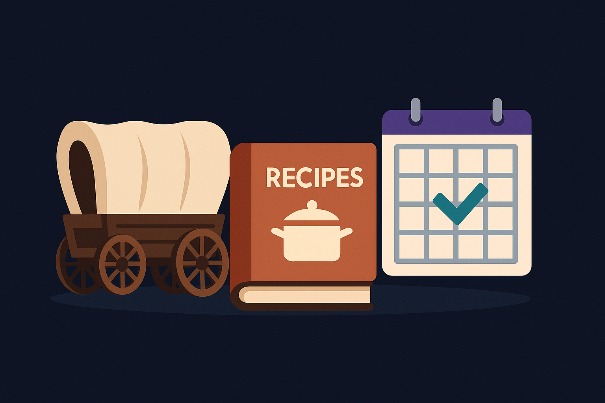

Analysis · Automation
Productivity Tracking
Counting items didn’t tell us how much work they required. I built a prototype that helped turn complexity into a useful productivity measure.
Excel · VBA · Requirements Gathering · Tableau
A closer look at the problems I've worked through, the tools I've built, and my part in bringing them together.
Counting items didn’t tell us how much work they required. I built a prototype that helped turn complexity into a useful productivity measure.
Excel · VBA · Requirements Gathering · Tableau
Receiving an item took roughly two to five minutes across several systems. I built automation that brought most items down to eight to fifteen seconds, with checks to catch problems along the way.
Excel · VBA · Process Automation · Data Validation
I lead a three-person team building a Django trading simulation, working through requirements and bringing our individual contributions together.
Django · Python · Systems Analysis · Project Management

Chat with your own personal beauty consultant and build a routine around the products you choose.
HTML · CSS · JavaScript · OpenAI API · Cloudflare Workers

Pick a date range, then let NASA’s image archive walk you through our universe one day at a time.
HTML · CSS · JavaScript · NASA API · Cloudflare Workers

A fast-paced pipe-connecting game built to raise awareness for clean water access.
HTML · CSS · JavaScript

A growing collection of JavaScript mini-games built for quick study breaks and debugging practice.
HTML · CSS · JavaScript

Oregon Trail fan build, What Can I Cook?, and the Visual Daily Scheduler — all evolving as I learn new tools and techniques.
HTML · CSS · JavaScript · React · Vite · Node.js · Python
I started Able Software and Web to put my experience into practice for individuals and small businesses. My focus is on understanding how the work gets done and figuring out where a website, automation, or custom software would actually help.
The business is still developing. It gives me a place to work through practical needs, explore solutions, and build on what I've learned in operations and school.
From a barcode-scanning prototype to an approach used across 108 studios.
Faster receiving, fewer errors, and checks before items returned to warehouse inventory.
An ongoing three-person Information Technology capstone at Arizona State University.
AI-powered routine builder and product advisor
Daily images and facts from NASA’s archive
Awareness-driven puzzle game for clean water
A playground of JavaScript mini-games
Projects that are still evolving as I learn